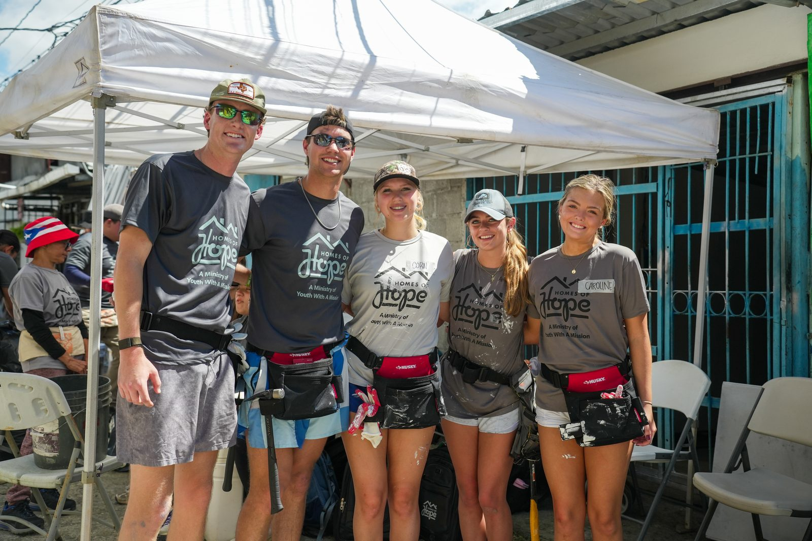

Every November for the past seven years, Landon Tinker has packed a tool belt instead of a suitcase and traveled to Costa Rica with his family to build homes through Youth With A Mission.
Landon Tinker's generosity is most clearly reflected in the consistency of his service. For the past seven years, he has volunteered every November alongside his family to help build homes in Costa Rica through YWAM's Homes of Hope program. This isn't a one-time act of goodwill, but a sustained commitment that requires planning, sacrifice, and a willingness to step away from personal comforts in order to serve others.
A Commitment That Started With Family
Year after year, Landon chooses to dedicate his time and energy to communities in need, demonstrating that his compassion is rooted in action rather than intention alone. The trip has become a fixture on the Tinker family calendar — planned around, not squeezed in — which says as much about the family's priorities as it does about any single build.
That kind of repeated commitment is unusual, especially for someone who spent his college years balancing a full course load in construction science at Texas A&M with a fulltime internship. Landon writes more about how his coursework and jobsite experience intersect in his article on the path from internships to the jobsite.
Hands-On Work, Real Impact
What makes Landon's volunteering especially meaningful is the hands-on nature of the work. Building homes is physically demanding and requires patience, teamwork, and problem-solving. Landon approaches these challenges with humility and determination, understanding that each task — no matter how small — contributes to a family's safety, stability, and dignity.
His willingness to do difficult work without recognition highlights a quiet generosity that prioritizes impact over praise. It is the same instinct that shows up on his internship jobsites: show up, do the work well, and let the finished structure speak for itself. Photos from recent builds are up on his Instagram account.
A Family Value, A Shared Purpose
Volunteering with his family has also allowed Landon to model service as a shared value rather than an individual accomplishment. By participating together, he reinforces the importance of giving back across generations and cultures. His long-term involvement has given him a deep appreciation for the people and communities he serves, transforming each annual trip into a continuation of relationships rather than a single isolated effort.
Ultimately, Landon's dedication to volunteering reflects a character defined by empathy, perseverance, and responsibility to others. His seven years of consistent service through YWAM show a genuine commitment to making a lasting difference — the same commitment he brings to his construction science studies. Read more about Landon's background to see how it all connects.
Conclusion
Through his generosity of time, labor, and spirit, Landon Tinker exemplifies what it means to serve faithfully and selflessly, leaving a positive impact that extends far beyond the homes he helps build.